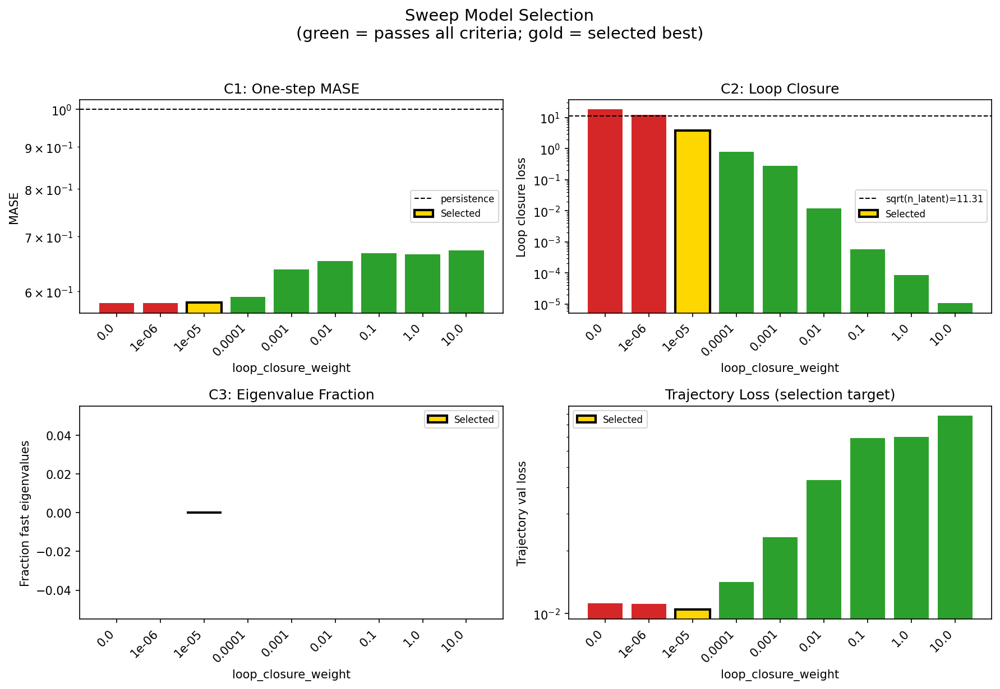
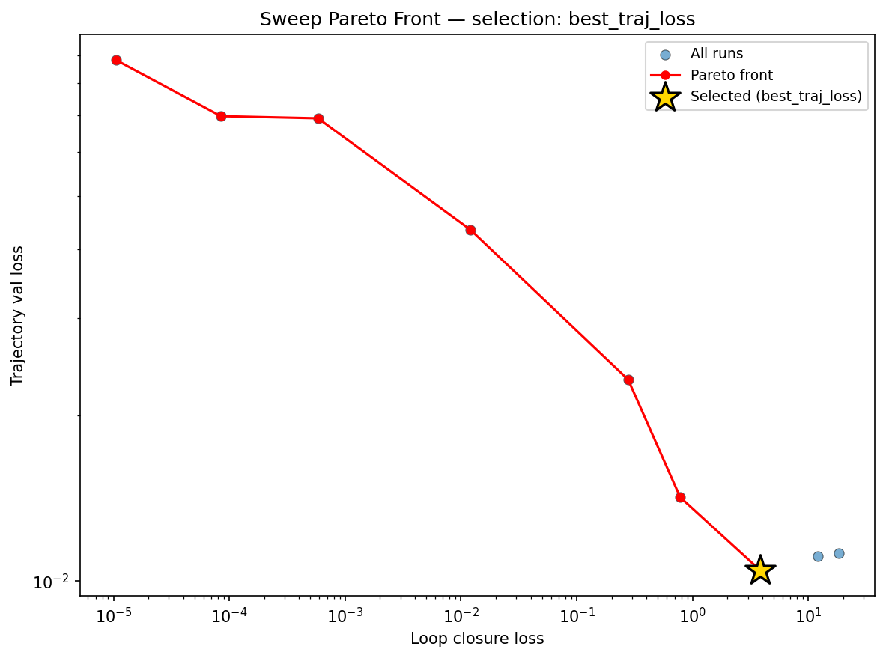
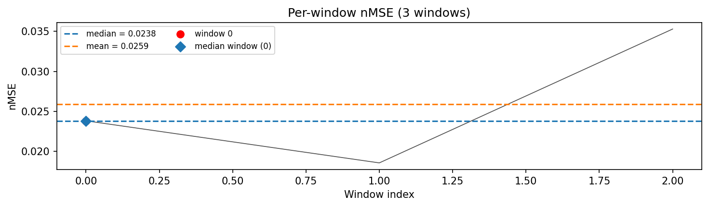
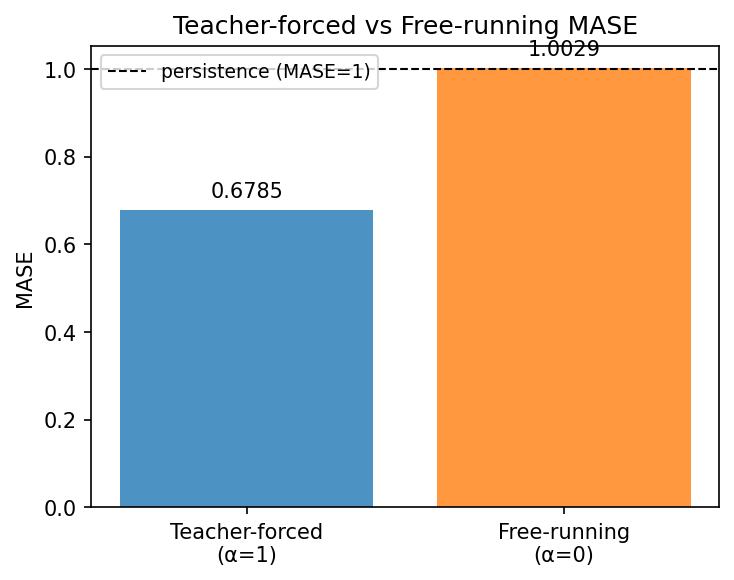
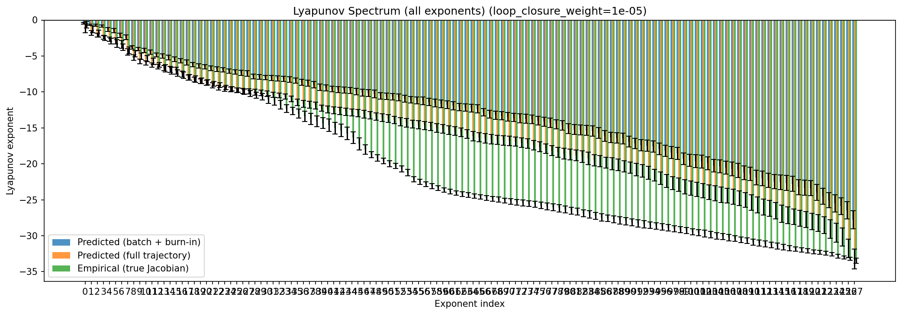
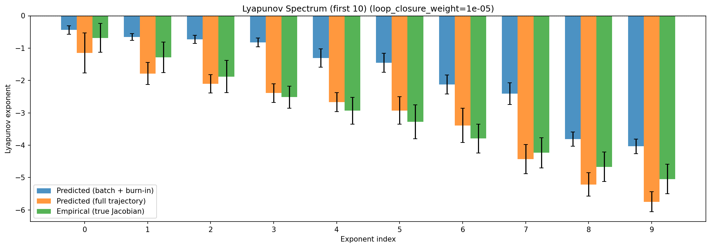
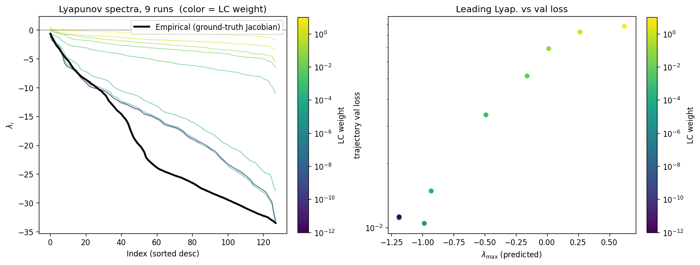
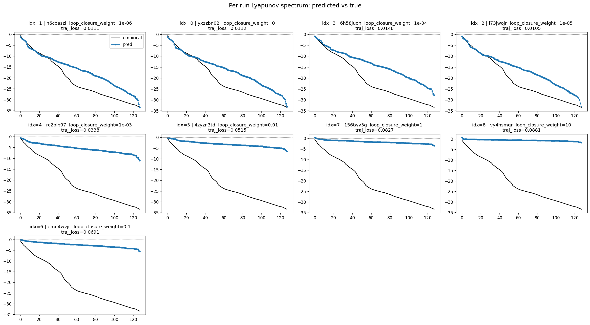
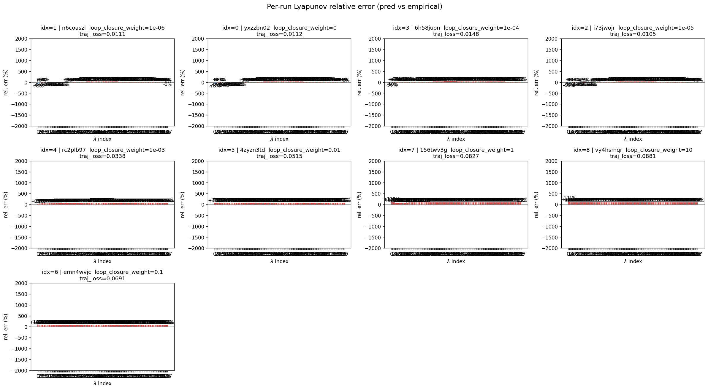
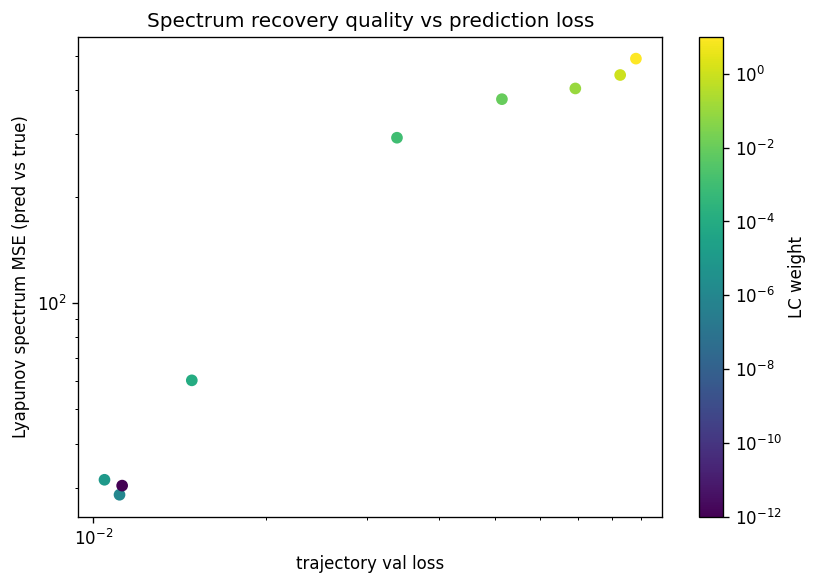

wmtask_latent_additive_mse_p30__lc_sweepProject: WMTask_identity_encoder_verification
Launched: 2026-04-15T15:47:12Z
Completed: 2026-04-15T22:55:20Z
Outcome: complete_clean
Git: latent-JacobianODE @ 325ada0
Expected runs: 9
wmtask_latent_additive_mse_p30Description
WMTask fully-observed, latent JacobianODE with additive coupling encoder (zero_init, volume-preserving), z_dyn=128 (= full latent, no null subspace). Joint training with LPL + reconstruction + loop closure, plain MSE loss. obs_noise_scale=0.05, prediction_steps=30, seq_length=45. LC weight swept.
Hypothesis
With the same data / noise / loss as the vanilla WMTask p30 sweep, the latent pipeline on 128 -> 128 (no null) should match or beat vanilla — if it doesn't, the extra encoder layers are costing more than they're buying on this problem. Longer rollout should benefit the latent model more than vanilla because it has more paths for error to compound without multi-step signal.
Success criteria
Overall best MASE: 0.9511 (LC weight = 1.0e-05, obs_noise_scale = 0.05) Overall best traj loss: 0.01046 at epoch 8.0 Runs analyzed: 9
obs_noise_scale| obs_noise_scale | Best LC weight | Best traj loss | MASE at best | R² | LC loss | epoch |
|---|---|---|---|---|---|---|
| 0.05 | 1.0e-05 | 0.01046 | 0.9511 | 0.9880 | 3.833 | 8.0 |
| Criterion | Verdict | Note |
|---|---|---|
| Best-LC trajectory_r2 matches wmtask_vanilla_mse_p30 within a few percent | Unknown | |
| LC optimum similar order of magnitude to vanilla's | Unknown | |
| No loop-closure explosion across the sweep | Unknown |
Automated verdicts use simple numeric-threshold parsing and may mis-classify qualitative criteria. The Discussion section below takes precedence.










(to be written)
run_analytics stdoutrun_analyticsNo run_id provided — selecting best run from group 'wmtask_latent_additive_mse_p30__lc_sweep' ...
Found 9 total runs in JacobianODE/WMTask_identity_encoder_verification (group=wmtask_latent_additive_mse_p30__lc_sweep)
All runs (state, loop_closure_weight, tangent_entropy_weight, kl_dyn_weight):
n6coaszl: state=finished, lc=1e-06, te=0.0, kl_dyn=0.0
yxzzbn02: state=finished, lc=0.0, te=0.0, kl_dyn=0.0
6h58juon: state=finished, lc=0.0001, te=0.0, kl_dyn=0.0
i73jwojr: state=finished, lc=1e-05, te=0.0, kl_dyn=0.0
rc2plb97: state=finished, lc=0.001, te=0.0, kl_dyn=0.0
4zyzn3td: state=finished, lc=0.01, te=0.0, kl_dyn=0.0
156twv3g: state=finished, lc=1.0, te=0.0, kl_dyn=0.0
vy4hsmqr: state=finished, lc=10.0, te=0.0, kl_dyn=0.0
emn4wvjc: state=finished, lc=0.1, te=0.0, kl_dyn=0.0
slurm_timeout_min not found in any run config — falling back to 180 min
Including n6coaszl (lc=1e-06): use_all_runs=True (state=finished)
Including yxzzbn02 (lc=0.0): use_all_runs=True (state=finished)
Including 6h58juon (lc=0.0001): use_all_runs=True (state=finished)
Including i73jwojr (lc=1e-05): use_all_runs=True (state=finished)
Including rc2plb97 (lc=0.001): use_all_runs=True (state=finished)
Including 4zyzn3td (lc=0.01): use_all_runs=True (state=finished)
Including 156twv3g (lc=1.0): use_all_runs=True (state=finished)
Including vy4hsmqr (lc=10.0): use_all_runs=True (state=finished)
Including emn4wvjc (lc=0.1): use_all_runs=True (state=finished)
Found 9 effectively-done sweep runs:
loop_closure_weight=0.0, tangent_entropy_weight=0.0, kl_dyn_weight=0.0 -> run_id=yxzzbn02
loop_closure_weight=1e-06, tangent_entropy_weight=0.0, kl_dyn_weight=0.0 -> run_id=n6coaszl
loop_closure_weight=1e-05, tangent_entropy_weight=0.0, kl_dyn_weight=0.0 -> run_id=i73jwojr
loop_closure_weight=0.0001, tangent_entropy_weight=0.0, kl_dyn_weight=0.0 -> run_id=6h58juon
loop_closure_weight=0.001, tangent_entropy_weight=0.0, kl_dyn_weight=0.0 -> run_id=rc2plb97
loop_closure_weight=0.01, tangent_entropy_weight=0.0, kl_dyn_weight=0.0 -> run_id=4zyzn3td
loop_closure_weight=0.1, tangent_entropy_weight=0.0, kl_dyn_weight=0.0 -> run_id=emn4wvjc
loop_closure_weight=1.0, tangent_entropy_weight=0.0, kl_dyn_weight=0.0 -> run_id=156twv3g
loop_closure_weight=10.0, tangent_entropy_weight=0.0, kl_dyn_weight=0.0 -> run_id=vy4hsmqr
loaded wmtask RNN model checkpoint 41
Loading cached wmtask hiddens from /orcd/data/ekmiller/001/eisenaj/ControlJacobians/WMTaskModels/WMSelectionTask__cue_time_0.1__response_time_0.25__enforce_fixation_False/BiologicalRNN__cue_time_0.1__learning_rate_0.0005__max_epochs_42__N1_64__N2_64__tau_0.05__dt_0.02__eig_lower_bound_0.1__init_mode_random/_jacobianode_cache/hiddens__all__epoch41__trials4096__seed42.pt
n_dims=128, n_latent=128, n_dyn=128, dt=0.0200
run=yxzzbn02: DiagnosticMetrics(one_step_mase=0.581122100353241, loop_closure_loss=18.287961959838867, fast_eigenvalue_fraction=0.0, trajectory_val_loss=0.01122894324362278) (from W&B history)
run=n6coaszl: DiagnosticMetrics(one_step_mase=0.5804667472839355, loop_closure_loss=12.041496276855469, fast_eigenvalue_fraction=0.0, trajectory_val_loss=0.011111286468803883) (from W&B history)
run=i73jwojr: DiagnosticMetrics(one_step_mase=0.5815854668617249, loop_closure_loss=3.8329050540924072, fast_eigenvalue_fraction=0.0, trajectory_val_loss=0.010461259633302689) (from W&B history)
run=6h58juon: DiagnosticMetrics(one_step_mase=0.5908204913139343, loop_closure_loss=0.7821398973464966, fast_eigenvalue_fraction=0.0, trajectory_val_loss=0.01419132575392723) (from W&B history)
run=rc2plb97: DiagnosticMetrics(one_step_mase=0.6379468441009521, loop_closure_loss=0.27774956822395325, fast_eigenvalue_fraction=0.0, trajectory_val_loss=0.023202715441584587) (from W&B history)
run=4zyzn3td: DiagnosticMetrics(one_step_mase=0.6536867618560791, loop_closure_loss=0.012131458148360252, fast_eigenvalue_fraction=0.0, trajectory_val_loss=0.0433589443564415) (from W&B history)
run=emn4wvjc: DiagnosticMetrics(one_step_mase=0.668180525302887, loop_closure_loss=0.0005838210927322507, fast_eigenvalue_fraction=0.0, trajectory_val_loss=0.06912791728973389) (from W&B history)
run=156twv3g: DiagnosticMetrics(one_step_mase=0.6654379963874817, loop_closure_loss=8.462152618449181e-05, fast_eigenvalue_fraction=0.0, trajectory_val_loss=0.0697537511587143) (from W&B history)
run=vy4hsmqr: DiagnosticMetrics(one_step_mase=0.6729975342750549, loop_closure_loss=1.0539747563598212e-05, fast_eigenvalue_fraction=0.0, trajectory_val_loss=0.08814359456300735) (from W&B history)
Ranking method: best_traj_loss
Best run ID: i73jwojr
Best loop_closure_weight: 1e-05
Best tangent_entropy_weight: 0.0
Best kl_dyn_weight: 0.0
Best traj loss: 0.010461
Criteria applied: ['C1', 'C2', 'C3']
Surviving: 7 / 9
Auto-selected run_id: i73jwojr
======================================================================
PARETO FRONTIER RUNS (7 runs)
======================================================================
Run ID LC Loss Traj Val Loss
------------ -------------- --------------
vy4hsmqr 0.000011 0.088144
156twv3g 0.000085 0.069754
emn4wvjc 0.000584 0.069128
4zyzn3td 0.012131 0.043359
rc2plb97 0.277750 0.023203
6h58juon 0.782140 0.014191
i73jwojr 3.832905 0.010461 <-- selected
======================================================================
RANKING METHOD COMPARISON (over 7 survivors)
======================================================================
Method Run ID LC Loss Traj Val Loss
---------------------- ------------ -------------- --------------
best_traj_loss i73jwojr 3.832905 0.010461 <-- active
pareto_knee emn4wvjc 0.000584 0.069128
geo_rank i73jwojr 3.832905 0.010461
minimax_rank 4zyzn3td 0.012131 0.043359
geo_log_score i73jwojr 3.832905 0.010461
minimax_log_score 4zyzn3td 0.012131 0.043359
======================================================================
Loading run i73jwojr from JacobianODE/WMTask_identity_encoder_verification ...
loaded wmtask RNN model checkpoint 41
Loading cached wmtask hiddens from /orcd/data/ekmiller/001/eisenaj/ControlJacobians/WMTaskModels/WMSelectionTask__cue_time_0.1__response_time_0.25__enforce_fixation_False/BiologicalRNN__cue_time_0.1__learning_rate_0.0005__max_epochs_42__N1_64__N2_64__tau_0.05__dt_0.02__eig_lower_bound_0.1__init_mode_random/_jacobianode_cache/hiddens__all__epoch41__trials4096__seed42.pt
Train dataset shape: torch.Size([11468, 45, 128])
Validation dataset shape: torch.Size([3280, 45, 128])
Test dataset shape: torch.Size([1636, 45, 128])
Train trajectories dataset shape: torch.Size([2867, 49, 128])
Validation trajectories dataset shape: torch.Size([820, 49, 128])
Test trajectories dataset shape: torch.Size([409, 49, 128])
Loading checkpoint epoch=8-step=1125.ckpt...
Computing MASE ...
Teacher-forced MASE: 0.6785
Free-running MASE: 1.0029
Computing Lyapunov exponents ...
Computing full-trajectory Lyapunov (409 test trajs, T=49) ...
Predicted Lyapunov exponents (batch+burn-in, 128 windowed trajs):
λ_1 = -0.4388 ± 0.1310
λ_2 = -0.6578 ± 0.1070
λ_3 = -0.7276 ± 0.1297
λ_4 = -0.8254 ± 0.1342
λ_5 = -1.3095 ± 0.2843
λ_6 = -1.4562 ± 0.2945
λ_7 = -2.1241 ± 0.2932
λ_8 = -2.4075 ± 0.3342
λ_9 = -3.8114 ± 0.2166
λ_10 = -4.0335 ± 0.2265
λ_11 = -4.2245 ± 0.3186
λ_12 = -4.4514 ± 0.2984
λ_13 = -4.8546 ± 0.2985
λ_14 = -5.0187 ± 0.2997
λ_15 = -5.1964 ± 0.3301
λ_16 = -5.4599 ± 0.3428
λ_17 = -5.6622 ± 0.3257
λ_18 = -5.8999 ± 0.3488
λ_19 = -6.2230 ± 0.3043
λ_20 = -6.3766 ± 0.2998
λ_21 = -6.5220 ± 0.2897
λ_22 = -6.7157 ± 0.3102
λ_23 = -6.8242 ± 0.3271
λ_24 = -6.9280 ± 0.3103
λ_25 = -7.0996 ± 0.3042
λ_26 = -7.2242 ± 0.3183
λ_27 = -7.3368 ± 0.3597
λ_28 = -7.4356 ± 0.3971
λ_29 = -7.8377 ± 0.3144
λ_30 = -7.9183 ± 0.3125
λ_31 = -7.9963 ± 0.3171
λ_32 = -8.0641 ± 0.3327
λ_33 = -8.1250 ± 0.3452
λ_34 = -8.1984 ± 0.3542
λ_35 = -8.2876 ± 0.3815
λ_36 = -8.4158 ± 0.3785
λ_37 = -8.6804 ± 0.4237
λ_38 = -8.7890 ± 0.4405
λ_39 = -8.9843 ± 0.4489
λ_40 = -9.3419 ± 0.4337
λ_41 = -9.4137 ± 0.4187
λ_42 = -9.5906 ± 0.4072
λ_43 = -9.6912 ± 0.4013
λ_44 = -9.7494 ± 0.4132
λ_45 = -9.8267 ± 0.4170
λ_46 = -9.9464 ± 0.4437
λ_47 = -10.1015 ± 0.4525
λ_48 = -10.1672 ± 0.4758
λ_49 = -10.2823 ± 0.5131
λ_50 = -10.5476 ± 0.4722
λ_51 = -10.6099 ± 0.4703
λ_52 = -10.6635 ± 0.4716
λ_53 = -10.7706 ± 0.4833
λ_54 = -10.9546 ± 0.4780
λ_55 = -11.0894 ± 0.4753
λ_56 = -11.1827 ± 0.5006
λ_57 = -11.2561 ± 0.5357
λ_58 = -11.3927 ± 0.5173
λ_59 = -11.5571 ± 0.5372
λ_60 = -11.6739 ± 0.5491
λ_61 = -11.7761 ± 0.5401
λ_62 = -11.9241 ± 0.5469
λ_63 = -12.1037 ± 0.5227
λ_64 = -12.1789 ± 0.5258
λ_65 = -12.2422 ± 0.5281
λ_66 = -12.3674 ± 0.5745
λ_67 = -12.8269 ± 0.5334
λ_68 = -13.0868 ± 0.5483
λ_69 = -13.2384 ± 0.5741
λ_70 = -13.3098 ± 0.5840
λ_71 = -13.4316 ± 0.5937
λ_72 = -13.5469 ± 0.5867
λ_73 = -13.6605 ± 0.6074
λ_74 = -13.7424 ± 0.6201
λ_75 = -13.8186 ± 0.6245
λ_76 = -14.0143 ± 0.6093
λ_77 = -14.1402 ± 0.6410
λ_78 = -14.2693 ± 0.6581
λ_79 = -14.5027 ± 0.6453
λ_80 = -14.6569 ± 0.6819
λ_81 = -15.1055 ± 0.6615
λ_82 = -15.2297 ± 0.6793
λ_83 = -15.3018 ± 0.6812
λ_84 = -15.3590 ± 0.6998
λ_85 = -15.4370 ± 0.7025
λ_86 = -15.7168 ± 0.7336
λ_87 = -16.1198 ± 0.7233
λ_88 = -16.3112 ± 0.7224
λ_89 = -16.3876 ± 0.7435
λ_90 = -16.4715 ± 0.7407
λ_91 = -16.9077 ± 0.7501
λ_92 = -17.1726 ± 0.7407
λ_93 = -17.3950 ± 0.7791
λ_94 = -17.4715 ± 0.7879
λ_95 = -17.5921 ± 0.7658
λ_96 = -17.9422 ± 0.8100
λ_97 = -18.2021 ± 0.7806
λ_98 = -18.4240 ± 0.8412
λ_99 = -18.5630 ± 0.8374
λ_100 = -19.3027 ± 0.8112
λ_101 = -19.5218 ± 0.8517
λ_102 = -19.6160 ± 0.8867
λ_103 = -19.7044 ± 0.8954
λ_104 = -19.9228 ± 0.9183
λ_105 = -20.2618 ± 0.8887
λ_106 = -20.3615 ± 0.8853
λ_107 = -20.5117 ± 0.9071
λ_108 = -20.7035 ± 0.9442
λ_109 = -20.9028 ± 0.9813
λ_110 = -21.2306 ± 0.9471
λ_111 = -21.4034 ± 0.9477
λ_112 = -21.9081 ± 0.9957
λ_113 = -22.0181 ± 1.0169
λ_114 = -22.3156 ± 0.9909
λ_115 = -22.4817 ± 0.9818
λ_116 = -22.5724 ± 0.9988
λ_117 = -22.6591 ± 1.0305
λ_118 = -22.7776 ± 1.0205
λ_119 = -23.2485 ± 1.0404
λ_120 = -23.3231 ± 1.0476
λ_121 = -23.3873 ± 1.0576
λ_122 = -23.9783 ± 1.0898
λ_123 = -24.5326 ± 1.1107
λ_124 = -25.0638 ± 1.0662
λ_125 = -25.4997 ± 1.2002
λ_126 = -25.8871 ± 1.1872
λ_127 = -26.4739 ± 1.1866
λ_128 = -27.7764 ± 1.2634
Predicted Lyapunov exponents (full-length, 409 test trajs):
λ_1 = -1.1470 ± 0.6166
λ_2 = -1.7853 ± 0.3385
λ_3 = -2.1033 ± 0.2830
λ_4 = -2.3895 ± 0.2881
λ_5 = -2.6693 ± 0.2893
λ_6 = -2.9265 ± 0.4262
λ_7 = -3.3910 ± 0.5307
λ_8 = -4.4314 ± 0.4529
λ_9 = -5.2129 ± 0.3632
λ_10 = -5.7467 ± 0.3111
λ_11 = -5.9782 ± 0.3053
λ_12 = -6.2558 ± 0.2973
λ_13 = -6.4763 ± 0.3077
λ_14 = -6.6853 ± 0.3644
λ_15 = -6.8756 ± 0.4101
λ_16 = -7.0682 ± 0.4802
λ_17 = -7.5197 ± 0.4120
λ_18 = -8.0183 ± 0.3472
λ_19 = -8.2785 ± 0.3333
λ_20 = -8.5178 ± 0.3250
λ_21 = -8.7269 ± 0.3432
λ_22 = -9.0888 ± 0.3790
λ_23 = -9.4303 ± 0.3385
λ_24 = -9.5727 ± 0.3170
λ_25 = -9.6536 ± 0.3197
λ_26 = -9.7589 ± 0.3450
λ_27 = -9.8575 ± 0.3491
λ_28 = -9.9435 ± 0.3538
λ_29 = -10.0449 ± 0.3970
λ_30 = -10.1499 ± 0.3930
λ_31 = -10.2577 ± 0.3797
λ_32 = -10.3762 ± 0.3667
λ_33 = -10.4927 ± 0.3281
λ_34 = -10.6394 ± 0.3813
λ_35 = -10.9644 ± 0.3710
λ_36 = -11.4285 ± 0.4552
λ_37 = -11.6311 ± 0.4788
λ_38 = -11.7777 ± 0.5037
λ_39 = -11.8845 ± 0.4902
λ_40 = -12.2593 ± 0.4462
λ_41 = -12.4455 ± 0.4976
λ_42 = -12.5647 ± 0.4968
λ_43 = -12.6583 ± 0.4960
λ_44 = -12.7569 ± 0.4912
λ_45 = -12.8437 ± 0.4886
λ_46 = -12.9650 ± 0.5088
λ_47 = -13.0740 ± 0.5362
λ_48 = -13.2644 ± 0.5046
λ_49 = -13.4057 ± 0.5170
λ_50 = -13.5579 ± 0.5357
λ_51 = -13.6969 ± 0.5287
λ_52 = -13.9055 ± 0.5345
λ_53 = -14.1422 ± 0.5696
λ_54 = -14.3113 ± 0.5869
λ_55 = -14.4715 ± 0.5573
λ_56 = -14.5755 ± 0.5530
λ_57 = -14.6713 ± 0.5709
λ_58 = -14.8133 ± 0.5600
λ_59 = -15.0113 ± 0.5823
λ_60 = -15.1493 ± 0.5988
λ_61 = -15.3071 ± 0.5862
λ_62 = -15.4328 ± 0.6122
λ_63 = -15.6313 ± 0.5896
λ_64 = -15.8407 ± 0.6151
λ_65 = -16.1638 ± 0.6602
λ_66 = -16.3085 ± 0.6483
λ_67 = -16.4655 ± 0.6677
λ_68 = -16.5643 ± 0.6399
λ_69 = -16.6690 ± 0.6379
λ_70 = -16.7587 ± 0.6470
λ_71 = -16.8299 ± 0.6483
λ_72 = -16.9045 ± 0.6442
λ_73 = -17.0298 ± 0.6587
λ_74 = -17.1802 ± 0.6632
λ_75 = -17.4202 ± 0.6681
λ_76 = -17.6288 ± 0.6767
λ_77 = -17.8926 ± 0.6424
λ_78 = -18.1651 ± 0.6828
λ_79 = -18.3943 ± 0.7042
λ_80 = -18.5854 ± 0.7367
λ_81 = -18.7213 ± 0.7521
λ_82 = -18.8456 ± 0.7473
λ_83 = -18.9949 ± 0.8094
λ_84 = -19.2432 ± 0.8666
λ_85 = -19.5116 ± 0.7806
λ_86 = -19.6434 ± 0.7799
λ_87 = -19.8188 ± 0.7518
λ_88 = -19.9878 ± 0.8140
λ_89 = -20.1520 ± 0.8054
λ_90 = -20.3507 ± 0.8027
λ_91 = -20.5242 ± 0.7893
λ_92 = -20.7920 ± 0.8598
λ_93 = -20.9993 ± 0.8609
λ_94 = -21.2329 ± 0.8993
λ_95 = -21.5562 ± 0.8133
λ_96 = -21.9945 ± 0.8961
λ_97 = -22.3913 ± 0.9017
λ_98 = -22.6820 ± 0.8920
λ_99 = -22.9013 ± 0.9403
λ_100 = -23.1761 ± 0.9874
λ_101 = -23.3721 ± 0.9794
λ_102 = -23.5512 ± 0.9873
λ_103 = -23.7551 ± 0.9907
λ_104 = -23.9368 ± 0.9972
λ_105 = -24.1203 ± 1.0490
λ_106 = -24.2925 ± 1.0759
λ_107 = -24.4188 ± 1.0376
λ_108 = -24.5906 ± 1.0438
λ_109 = -24.7636 ± 1.0255
λ_110 = -25.0240 ± 1.0352
λ_111 = -25.3645 ± 1.0727
λ_112 = -25.7011 ± 1.1224
λ_113 = -26.0051 ± 1.1032
λ_114 = -26.2065 ± 1.1238
λ_115 = -26.5430 ± 1.1320
λ_116 = -26.9131 ± 1.1999
λ_117 = -27.1568 ± 1.1559
λ_118 = -27.3703 ± 1.0949
λ_119 = -27.5691 ± 1.0975
λ_120 = -27.7536 ± 1.1053
λ_121 = -28.0147 ± 1.1304
λ_122 = -28.2332 ± 1.1623
λ_123 = -28.5395 ± 1.1590
λ_124 = -29.0838 ± 1.3006
λ_125 = -29.5626 ± 1.3214
λ_126 = -30.1956 ± 1.2638
λ_127 = -31.7878 ± 1.2875
λ_128 = -33.2459 ± 1.3797
Empirical Lyapunov exponents (mean ± std):
λ_1 = -0.6836 ± 0.4470
λ_2 = -1.2860 ± 0.4717
λ_3 = -1.8796 ± 0.4983
λ_4 = -2.5140 ± 0.3383
λ_5 = -2.9329 ± 0.4143
λ_6 = -3.2778 ± 0.5212
λ_7 = -3.7948 ± 0.4446
λ_8 = -4.2351 ± 0.4668
λ_9 = -4.6672 ± 0.4583
λ_10 = -5.0458 ± 0.4531
λ_11 = -5.3534 ± 0.4185
λ_12 = -5.7506 ± 0.4346
λ_13 = -6.2355 ± 0.3491
λ_14 = -6.7043 ± 0.5036
λ_15 = -7.0414 ± 0.4554
λ_16 = -7.3719 ± 0.4648
λ_17 = -7.6725 ± 0.4415
λ_18 = -7.9667 ± 0.4130
λ_19 = -8.2155 ± 0.4290
λ_20 = -8.4474 ± 0.4083
λ_21 = -8.6400 ± 0.3667
λ_22 = -8.8546 ± 0.3395
λ_23 = -9.0471 ± 0.3366
λ_24 = -9.3642 ± 0.2863
λ_25 = -9.5403 ± 0.3009
λ_26 = -9.7473 ± 0.3189
λ_27 = -9.9780 ± 0.3514
λ_28 = -10.2177 ± 0.4331
λ_29 = -10.4760 ± 0.4197
λ_30 = -10.6968 ± 0.4504
λ_31 = -11.0538 ± 0.5425
λ_32 = -11.3182 ± 0.5459
λ_33 = -11.7806 ± 0.6071
λ_34 = -12.3300 ± 0.5244
λ_35 = -12.6464 ± 0.5369
λ_36 = -13.0198 ± 0.6314
λ_37 = -13.3795 ± 0.7073
λ_38 = -13.7502 ± 0.7660
λ_39 = -14.0682 ± 0.7579
λ_40 = -14.3279 ± 0.7619
λ_41 = -14.6206 ± 0.8778
λ_42 = -15.0213 ± 0.8116
λ_43 = -15.3487 ± 0.8488
λ_44 = -15.7679 ± 0.8512
λ_45 = -16.3535 ± 0.8105
λ_46 = -17.2371 ± 0.8420
λ_47 = -18.0172 ± 0.6551
λ_48 = -18.7348 ± 0.4352
λ_49 = -19.1920 ± 0.4388
λ_50 = -19.6032 ± 0.3862
λ_51 = -19.9849 ± 0.4171
λ_52 = -20.2854 ± 0.3677
λ_53 = -20.7129 ± 0.4088
λ_54 = -21.2293 ± 0.4493
λ_55 = -22.1518 ± 0.3711
λ_56 = -22.5100 ± 0.3571
λ_57 = -22.8264 ± 0.3133
λ_58 = -23.1069 ± 0.3495
λ_59 = -23.3589 ± 0.3337
λ_60 = -23.6276 ± 0.2926
λ_61 = -23.8603 ± 0.3155
λ_62 = -24.0618 ± 0.3005
λ_63 = -24.2152 ± 0.3129
λ_64 = -24.3396 ± 0.3136
λ_65 = -24.4895 ± 0.3210
λ_66 = -24.6115 ± 0.3197
λ_67 = -24.7359 ± 0.3269
λ_68 = -24.8561 ± 0.3392
λ_69 = -24.9753 ± 0.3426
λ_70 = -25.1117 ± 0.3497
λ_71 = -25.2226 ± 0.3734
λ_72 = -25.3357 ± 0.4009
λ_73 = -25.4353 ± 0.4172
λ_74 = -25.5439 ± 0.4046
λ_75 = -25.6332 ± 0.4116
λ_76 = -25.7832 ± 0.4585
λ_77 = -25.9142 ± 0.4799
λ_78 = -26.0449 ± 0.4990
λ_79 = -26.1810 ± 0.5037
λ_80 = -26.3617 ± 0.4899
λ_81 = -26.5171 ± 0.4864
λ_82 = -26.6628 ± 0.4753
λ_83 = -26.8617 ± 0.4795
λ_84 = -27.0282 ± 0.5036
λ_85 = -27.2607 ± 0.4846
λ_86 = -27.4529 ± 0.4854
λ_87 = -27.5733 ± 0.4725
λ_88 = -27.7187 ± 0.4967
λ_89 = -27.8617 ± 0.5003
λ_90 = -27.9895 ± 0.4903
λ_91 = -28.1274 ± 0.4923
λ_92 = -28.2824 ± 0.4913
λ_93 = -28.4072 ± 0.4914
λ_94 = -28.5255 ± 0.4695
λ_95 = -28.6477 ± 0.4521
λ_96 = -28.7842 ± 0.4453
λ_97 = -28.9001 ± 0.4403
λ_98 = -29.0308 ± 0.4330
λ_99 = -29.1511 ± 0.4295
λ_100 = -29.2954 ± 0.4247
λ_101 = -29.4503 ± 0.4217
λ_102 = -29.5753 ± 0.4321
λ_103 = -29.6956 ± 0.4539
λ_104 = -29.8547 ± 0.4485
λ_105 = -29.9992 ± 0.4490
λ_106 = -30.1172 ± 0.4378
λ_107 = -30.2615 ± 0.4426
λ_108 = -30.4062 ± 0.3980
λ_109 = -30.5554 ± 0.4003
λ_110 = -30.7032 ± 0.3985
λ_111 = -30.8743 ± 0.4228
λ_112 = -31.0109 ± 0.4336
λ_113 = -31.1492 ± 0.4292
λ_114 = -31.3023 ± 0.3981
λ_115 = -31.4396 ± 0.4097
λ_116 = -31.5685 ± 0.3902
λ_117 = -31.7302 ± 0.3526
λ_118 = -31.8705 ± 0.3050
λ_119 = -31.9948 ± 0.3040
λ_120 = -32.0998 ± 0.2813
λ_121 = -32.2401 ± 0.2718
λ_122 = -32.3221 ± 0.2617
λ_123 = -32.4282 ± 0.2531
λ_124 = -32.5858 ± 0.2272
λ_125 = -32.8296 ± 0.2629
λ_126 = -33.0206 ± 0.2244
λ_127 = -33.2132 ± 0.2160
λ_128 = -33.4614 ± 0.3541
Computing prediction windows ...
Windows: 3 — nMSE min=0.0185, median=0.0238, mean=0.0259, max=0.0353